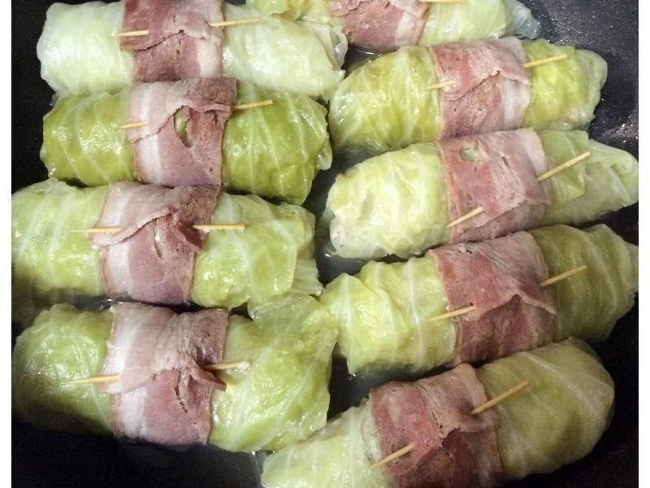

★豬肉片香芒卷
 烤肉醬汁總有剩下的，加以利用。愛文芒果的香氣及甜度，非常適合搭配烤肉醬汁的肉片，可以使用豬肉片或牛肉片。如果淋上檸檬的微酸更可以解膩唷。肉片香芒卷等你來品嚐!!
烤肉醬汁總有剩下的，加以利用。愛文芒果的香氣及甜度，非常適合搭配烤肉醬汁的肉片，可以使用豬肉片或牛肉片。如果淋上檸檬的微酸更可以解膩唷。肉片香芒卷等你來品嚐!!
★培根高麗菜肉卷
 培根的出現，一向是來者不拒的菜色。 ★肉餡有洋蔥炒過奶油，加上豬肉攬拌，以整片高麗菜葉捲起，充分將肉汁鎖在菜捲中。鮮綠的葉片裹上紅色的培根，好吃到不行的程度。 ★盛產高麗菜的季節，請你趕快來試試，好吃又好看。
★蜂蜜煙燻雞腿
 我家有愛吃肉的大小恐龍，對於肉類，來者不拒，這是一道喜歡食用的菜色。燻好顏色非常漂亮，就像烤得剛好的顏色。後續放涼就比較好切。（也可以塗上一層薄薄的蜂蜜，再進烤箱稍微烤一下，表皮有香甜甜的味道）如果你家有愛肉一族，這個煙燻雞腿絕對是「上選」！
我家有愛吃肉的大小恐龍，對於肉類，來者不拒，這是一道喜歡食用的菜色。燻好顏色非常漂亮，就像烤得剛好的顏色。後續放涼就比較好切。（也可以塗上一層薄薄的蜂蜜，再進烤箱稍微烤一下，表皮有香甜甜的味道）如果你家有愛肉一族，這個煙燻雞腿絕對是「上選」！
★戚風檸檬蛋糕
自從家中有了鑄鐵鍋，除了中餐之外，也試著做烤箱料理。這是一個簡單又好吃的蛋糕，除了藍莓也可以用檸檬汁、巧克力醬。動手做～很有樂趣！